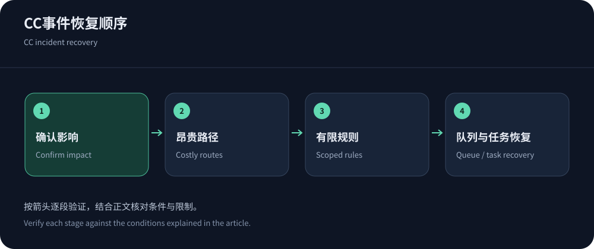
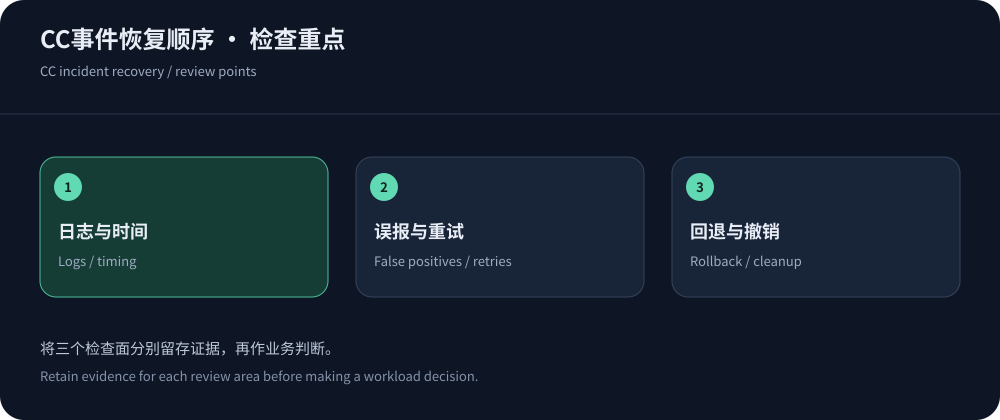

Separate abuse from faults and legitimate peaks
Slow pages and errors can come from releases, dependencies, campaigns or cache purges as well as CC abuse. Record onset, paths, regions, request changes, queues and recent changes before choosing a hypothesis.
This guide focuses on live websites and complements HTTP Flood analysis. Public documentation was checked on 14 October 2026. Restore workflows, bound expensive work and preserve evidence.
Collect evidence without creating another overload
Correlate timestamps, routes, methods, status, cache and edge actions with origin work, documenting timezone/sampling and redacting secrets. Bound emergency logging and retention.
Record every change and its rollback. Falling traffic can reflect cessation, backoff or mitigation; use a timeline and CISA guidance instead of retrospective screenshots.


Prioritize the most expensive routes
Group search, login, orders, exports and public content by normalized routes, identity and cache state. A low-volume expensive endpoint can exhaust a database before image traffic does.
Prioritize workflows with business owners. Defer nonessential reports only with an impact and recovery condition. Check external dependencies and queues for independent faults.
Three elements of an emergency rule
A temporary rule defines scope, counter and action, with owner, time and rollback. Shared-IP blocks harm mobile/shared networks; arbitrary headers can be forged. Use trustworthy sessions/tokens, route cost and concurrency budgets.
Challenges can break SDKs and callbacks. Use signatures, compatible errors and bounded retries. Distinguish observation from enforcement, and narrow a false-positive rule rather than disabling the whole WAF.
Inspect caching while escalating to the provider
Use RFC 9111 to offload safe public responses without sharing identities or writes. Prove parameter irrelevance before simplifying keys, and inspect stale errors.
Rate-rule documentation explains counters/actions. Escalate with redacted IDs and impact; for CDN5 or others, verify the actual order and configuration.
After traffic falls, inspect queues/retries and temporary charges, relaxing controls gradually while checking task outcomes.
Edge and origin controls must align
NGINX behind a CDN sees proxy addresses. Restrict trusted ingress and restore client identity through known proxies before choosing a source limit key. Edge controls reduce early work; origins still bound complexity, concurrency, pools and runtime.
NGINX rate controls cover rate/burst/rejection. Queuing consumes resources. Correlate edge and origin rejections and preserve idempotent writes.
Recover workflows before cleaning up
Restore critical workflows and queues gradually, resuming deferred jobs by priority. Purge selectively and validate origin capacity before widening. HTTP 200 on a homepage is not enough.
Application saturation may not need more network capacity; link saturation cannot be fixed in-app. Use CC principles and DDoS recovery. Keep rollback protected and inspect persistent sessions/retries.


Four post-incident questions
Ask which entrance exposed the origin, which rule provided evidence, which legitimate clients were harmed and whether billing/support were explainable. Revoke temporary allowlists, exemptions and test parameters.
Add long-term workload/cache/application monitoring and review triggers. Separate costly APIs, improve queries, queues or retry behavior as needed. Evidence and ownership make the next response faster and smaller.
When the cause remains uncertain, keep minimal necessary containment with an owner and reassessment time. Continue checking legitimate users across carriers/clients; reduced traffic can conceal failed tasks. Reconcile configuration with the pre-incident version, promoting verified fixes and reverting temporary changes.